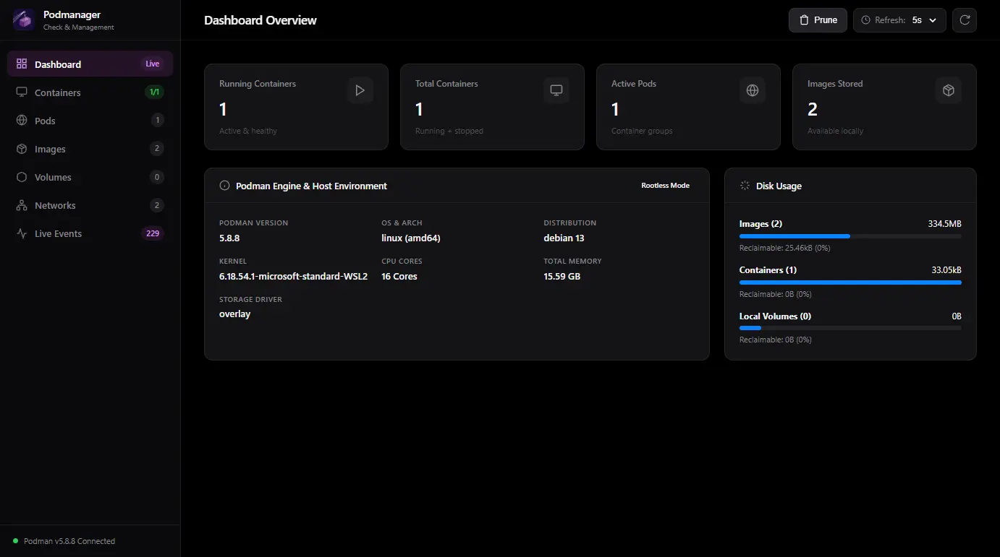

A fast, lightweight, and rootless Web GUI. Zero system sockets, zero background daemons, and a memory footprint under 30 MB.

Everything you need to orchestrate Podman environments without bloated dependencies.
Direct Podman CLI execution using safe child process arrays. No root privileges, no exposed Docker sockets, and no systemd daemon prerequisites.
Manage Kubernetes-style Podman pods out of the box. Inspect co-located containers, shared network namespaces, and batch lifecycle controls.
Continuous real-time feeds for container logs, image pull progress, and daemon events over lightweight Server-Sent Events.
Execute diagnostics commands directly inside any running container without opening a separate terminal or SSH session.
Pure modern vanilla web technologies. Zero compilation steps, zero heavy frontend frameworks, instant deployment.
Requires Node.js 24+ and Podman installed.